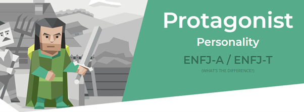

Andrew’s ideal job/career is within the cyber security field, the job he has in mind is Cyber Security Analyst, someone who monitors networks, responds to breaches/attacks, sets up protections and creates documentation and training on better security practices for a business. It would be a job that means working closely with upper management of a company to keep a high level of security based on company needs. He will need qualifications in IT such as undergraduate and/or master’s degree in IT, higher education focusing specifically on cyber security and general experience working in the IT industry, specifically in security or networking. Currently, Andrew does not have much experience in the fields required but is gathering the qualifications over the years to come.
The Meyers Briggs test indicated that Andrew is an INTP-T/Turbulent Logician with the role of analyst and the strategy of constant improvement.
These results, while initially did not surprise Andrew, have been found to not represent how Andrew works in a group setting. While he initially agreed with the assessment
and conceded that he found it difficult to work in groups and tended to be shy, Andrew has taken on the leadership role in the group for Assignment 2 and has proven to be a
capable and confident leader. This shows that the results from a simple test do not define how a person works in a team. Turbulent Logician types tend to be great abstract thinkers,
and they can analyse and interpret things quicker and easier than other types may. While Andrew is a bit shy or nervous when leading the group, he can overcome this and use his ability
to present ideas in multiple ways to his group. INTP-T types also tend to be more open minded and objective in conversations, which has shown to be a great trait in a leadership role.
Andrew’s big 5 personality test shows he scored high on Intellect/Imagination. This reinforces the idea that he can think abstractly and apply creative solutions to problems. So far, the group
has not run into any problems that were difficult to solve, however, if one arises these tests show that Andrew may be able to provide a helpful, creative perspective on the issue. Andrew is also
rated highly on agreeableness, which shows he is able to take on other’s viewpoints and this only furthers his ability to lead the team.
Andrew’s learning styles test shows he learns best by reflecting, which means he needs to analyse and collect data from around him to work effectively. Andrew disagreed with this and felt he learns best by doing,
rather than observation and reflection.
Nicholas wants to get into gaming and entertainment/mobile app development, with a minor interest in general IT practices like Network Engineering. For the latter he would be handling the uptime, security, and maintenance of network systems of businesses. In the sense of the primary ideal job that work could cover many different facets from project management to programming video games and other interactive media. In Network Engineering he would need a large pool of IT knowledge which would probably start at the entry level of basic IT and Tech support roles and qualifications like Cisco CCNA and/or CCNP qualifications. In gaming and entertainment, he will require similar qualifications in IT practices but also need qualifications and skills in programming and possibly 3D modelling based on where he wants his career to go. Nicholas has little to no professional experience in either role but is hoping that with undergrad qualifications and eventually double degree in both fields find something on an entry level.
The Meyers Briggs test indicated that Nicholas is an INFP-T mediator. Nicholas agrees with this analysis of his personality. Those with INFP personality traits feel out of place or misunderstood in the world which in turn makes them appear shy to everyone else. The strengths that Nicholas possesses with this personality include being thoughtful of everyone's feeling s, being generous with making sure every voice is heard, being open-minded of all ideas, being creative and being passionate in what he believes in. Thes e traits would mean that Nicholas would want everyone in the group to participate and would always acknowledge everyone’s ideas and would acknowledge them a s human beings too. Some weaknesses that come with this include being overly idealistic, being self-critical by expecting too much from himself, coming up w ith impractical ideas, being driven by emotion and always trying to please everyone. The main one that stands out here is the always trying to please everyon e because if a confrontation breaks out Nicholas will always try to make both sides as happy as they can be even if it is not possible, which can be both a go od and a bad thing. The role of the diplomat is key in group work, and if the need arises Nicholas will take charge. Nicholas’ big 5 personality test showed that his highest scores are Prospecting/Turbulent. The prospecting aspect means that he is more capable of dealing wit h unexpected challenges. It also means that Nicholas may be more impulsive than most because the motto of those with a high prospecting personality trait is that life is full of possibilities. This means in a team Nicholas would be able to keep a level head if a new problem arose at some point during the work. The turbulent aspect means that he is success driven and eager to improve. He always wants to better himself and his work. This is beneficial to a team especially ours where we have two personality types that look to better the group member because of his willingness to improve. Nicholas had an equal score between auditory learning and auditory and tactile on his learning style test, both at 40%. He did not agree with this and felt like he should have been more split between auditory and visual because that is how he has found it easiest for him to learn in the past.
Tyson’s end career goal is set deeper in the public service role, working with chief minister, treasury, and economic development sectors as an application support officer. The job will have him undertaking a series of roles technical support, problem/conflict resolution, change management, system administration and project support. He will need a bachelors in IT or something similar, and two years minimum experience in a similar role to this. He is currently studying the bachelor’s and has 1 year in government/administrative work, so he has almost completed enough of the qualifications for a consideration for the role.
The Meyers Briggs test indicated that Tyson is an ENFJ/ protagonist.

Tyson agreed with this analysis and was not surprised by this result. Those with the personality type protagonist are typically described as natural-born leaders.
This would show that Tyson would be more than willing to take on a leadership role in group work and would be able to bring everyone’s ideas together and formulate
them into a common goal. A weakness that this personality type has is that those with it typically get caught up reflecting and analysing their own feelings and seeing o
ther people’s problems in themselves. This could mean that if someone does not finish their work in time or in the correct manner Tyson could feel that responsibility on hi
mself rather than seeing it was out of his control. The strengths of this type would mean in group work Tyson will be tolerant of everyone’s ideas and opinions, reliable as a
teammate, have an altruistic desire to bring everyone together and inspire them and be able to take the lead.
Tyson took a creativity test that gave him a score of 56.34. His results leaned towards complexity (being able to manage large amounts of information), Persistence (being able to k
eep pushing for better solutions), abstraction (the ability to abstract concepts from ideas) and paradox (being able to work and with contradicting ideas). These results would mean
Tyson will always be looking to take his teams ideas and work to the next level, always pushing everyone to do better.
Tyson’s learning style test revealed that he is a tactile learner. This means that he learns best from the hands-on approach. He agreed with this assessment because he has found in the pa
st that he learns best by doing rather than watching or listening.
Connor wishes to move into the IT field of Systems Analyst. This job would mostly involve managing day to day operations of electronic protocols application software, perform general housekeeping and resolving software issues. Other tasks in this job are connecting with urban network and recommendations for implementing proposed system enhancements. The primary experience that Connor will need is desktop/system support experience alongside deep understanding of window 10, office 360 and similar application support experiences, the studies he is undertaking as far as he has seen will give him all the experience he needs to be considered for this role and then some.
The Meyers Briggs test indicated that Connor is an INTP-T/Turbulent Logician.
Connor agreed with this analysis and was not surprised by this. Although the INTP-T type holds many great leadership traits such as abstract thinking, being open minded, having an objecti
ve thought process, as well as being able to analyse and interpret things quicker and easier than some other types, when working in teams he often found himself taking more of a back role
and being told what to do rather than taking charge of a team. This type also has weaknesses such as potential to be insensitive, self-doubt, difficult to get to know, struggle to follow ru
les and having trouble expressing feelings. These weaknesses are what causes this type to shy out of the leadership role and this is demonstrated with Connor. Rather than taking charge he p
referred to allow others to take the leadership role.
Connor’s big 5 personality test shows that he scored high in Openness/Natural Reactions. This furthers the idea of abstract thinking and being open minded because it shows that he is consta
ntly thinking of new ideas and different approaches to situations. The natural reaction result would mean that Connor can always find a way to get work done even when under immense pressure.
This shows that Connor will be open to all ideas and always manage to get his work done no matter the time frame in our group work.
Connor’s learning style test revealed that he learns best by working through something hands-on. He agreed with this because he has found in the past when working on assignments or work that
he learns things faster and completes them better when the thing was learned in a hands-on manner.
Alex is another security focused individual, as previously stated he enjoys the idea of police work and IT and wishes to blend the two together either in the cyber security or intelligence field. Like Andrew, being in cyber security would require undergrad/master’s degree in IT, Higher education that targets Cyber Security specifically and general IT experience, he has good academic experience both in IT and police work, and little professional experie nce however he has several doors into further education in these fields allowing him to quickly catch up to the level of experience required for his ideal job.
The Meyers Briggs test indicated that Alex is an ENFJ-T/Turbulent protagonist.
Alex was not surprised by this analysis and agreed with it. The ENFJ type is known for being a natural leader. This would mean that in group work Alex would most likely
want to take charge. Alex will come into the group with the ENFJ traits of being tolerant of everyone’s ideas, being reliable as a teammate and will have the desire to bri
ng out everyone’s best work for the group. Some of the weaknesses of this group include being overly idealistic, struggling to make tough decisions and having fluctuating s
elf-esteem. This result could potentially mean that while wanting to be the leader this type may shy away from it out of self-doubt and may also expect more out of the group than may be possible.
Alex’s personality breakdown shows that he scored the highest on Intuitive/Judging. The intuitive aspect means that Alex always seeks new ideas and is always thinking about the future. This would mean that in the group
work aspect he would be more focused on the team reaching the end goal than most other members that may not have even begun thinking about it yet. This is a good leadershi
p quality because it allows him to not focus on the minor things but rather the bigger picture. The judging aspect he scored high in means that Alex would rather have a clear plan
for the future rather than to deal with things as they come along. This also shows that he would prefer a leadership role because then he can ensure that the plan for the work is
laid out in a detailed manner.